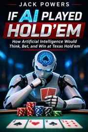

Part One
Understanding the AI Approach
Explore decision-making, probability, expected value, hand ranges, and the challenge of working with information that isn't available.
How Artificial Intelligence Would Think, Bet, and Win at Texas Hold’em
What would happen if an opponent approached poker without emotion, attachment to particular cards, or the need to win every hand? It would evaluate information, consider possibilities, calculate probabilities, and choose actions according to strategic principles.
This book explores how artificial intelligence would approach Texas Hold’em—and what human players can learn from that way of thinking.
View the Book on AmazonRead a Sample
The central question
Imagine facing a player that doesn't get excited by pocket aces, frustrated by a bad beat, or intimidated by an aggressive opponent.
Instead of reacting emotionally, an AI-style player evaluates the information available. It considers possible hands, betting patterns, position, probabilities, and the strategic consequences of each action.
It doesn't need to know an opponent's exact cards. It needs to make a strong decision with the information it has.
That distinction is important because Texas Hold’em is a game of incomplete information. Every player must make decisions without knowing everything—and every decision carries uncertainty.
The AI approach
The book moves from the mathematical foundations of intelligent poker to decisions on each street, strategic balance, opponent behavior, and the human application of AI-style thinking.
Explore decision-making, probability, expected value, hand ranges, and the challenge of working with information that isn't available.
Examine preflop decisions, position, flop, turn, river, checking, and bet sizing as the hand develops.
Study game theory, strategic balance, bluffing, value betting, defense, aggression, multiway pots, and stack sizes.
Consider opponent patterns, different playing styles, unknown opponents, anonymous poker, and the choice between exploitation and GTO.
Apply disciplined decision-making, bankroll management, hand review, and the human advantages that remain important.
Read an excerpt from the book
The following is an excerpt from the actual Introduction.
Imagine sitting down at a Texas Hold'em table and discovering that one of your opponents doesn't think like a human being. It doesn't get excited when dealt pocket aces, become frustrated after losing a large pot, or feel compelled to recover money after a bad session. It doesn't become intimidated by an aggressive opponent or fall in love with a particular starting hand.
Instead, it evaluates information, calculates probabilities, considers possible outcomes, and selects its actions according to mathematical and strategic principles.
What would happen if artificial intelligence played Hold'em?
This isn't merely a theoretical question. Artificial intelligence has already demonstrated an extraordinary ability to compete in poker, including against highly experienced professional players. Researchers have developed computer systems capable of analyzing complicated poker situations, evaluating possible strategies, and making decisions in games involving hidden information.
The lessons from these developments extend far beyond computers. They offer human players a different way to understand the game.
Human intuition can be useful in poker, but it can also be misleading. Players sometimes interpret a single bet as proof of strength, become attached to premium starting hands, or make emotional decisions after losing several pots.
An AI-style approach replaces unsupported assumptions with structured evaluation.
It considers position, hand ranges, probability, pot odds, expected value, bet sizing, and strategic balance. It also recognizes that winning an individual hand is not the same as making a profitable decision.
A player can make the correct decision and lose. Another player can make a poor decision and win. Over time, the quality of decisions becomes more important than the outcome of any particular hand.
Inside the book
Five parts, 32 chapters, a conclusion, and five appendices.
The Future of Poker Belongs to Better Decisions
Who this book is for
This book is for Texas Hold’em players interested in the mathematics and strategic principles behind intelligent poker decisions.
It is not a book about asking a chatbot what to do with every hand. It examines the strategic principles that make intelligent poker possible and considers how human players can apply them.
Poker involves risk, and no strategy can guarantee winning results. This book is educational and informational.
The complete book
How Artificial Intelligence Would Think, Bet, and Win at Texas Hold’em. Explore the mathematics, strategy, and decision-making principles behind an AI-style approach to poker.
View IF AI PLAYED HOLD’EM on Amazon